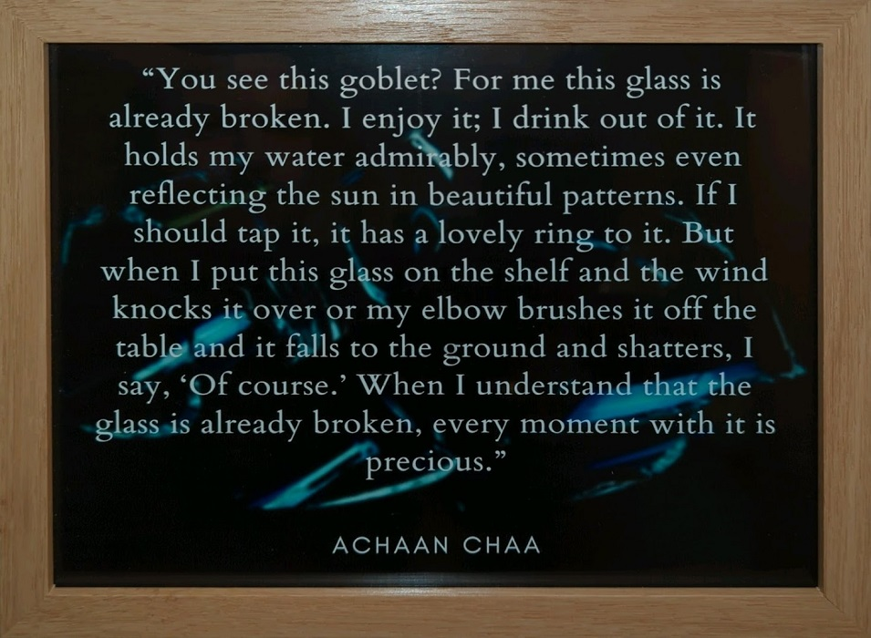
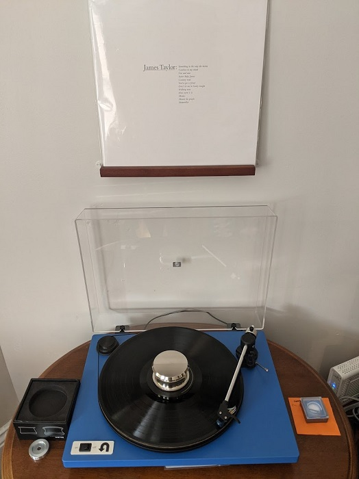
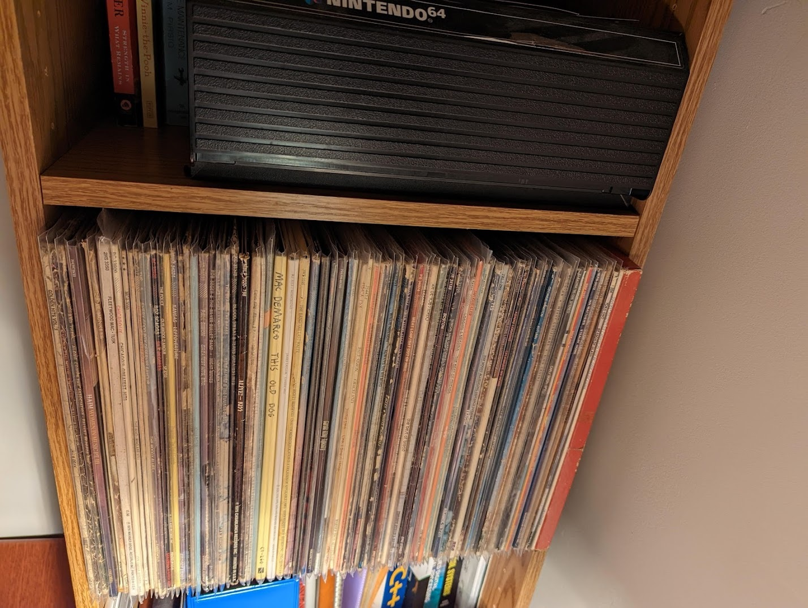

Andrew Whitaker


I’ll start by saying that I can be a bit obsessive about my hobbies. When I say that I mean a few things:
The first two points on that list have generally enabled me to find great satisfaction and achievement in my hobbies. But if the third one is significant, why in the world am I collecting records?
I know it is cliche, but I do find that having a physical connection to media makes things feel more sentimental. When I was growing up my parents had a wealth of CDs, and the sound of the stereo system’s CD changer tray is still vivid in my mind. Tapestry and George Winston’s December were permanent members of the lineup, with others swapped in as needed. Occasionally, my sister or I would find a new-to-us cassette tape around the house, and it would become the kitchen radio soundtrack for the next few months.
A few years ago when my family moved out of my childhood home, I looked through the box of records in the basement and was happy to see that many of them were albums I listened to on CD as a kid. Despite their less-than-archival storage situation for the past 30 years most of them still play great, and I enjoy hearing which tracks my parents wore out the most growing up.
I am at a point in my life where I keep many things optimized. I make sure to maximize my 401K contribution, my bicycles shift precisely, and my watch can tell me when it’s time to drink water. When I first unpacked my turntable and played a worn out 45 of Love Will Keep Us Together, I was both delighted and distressed. The record played through without any skips, but much of the sound was worn away. It was sentimental, but it wasn’t perfect.
This hobby has been a learning experience for me in many ways, cleaning and maintenance included, but the most important lesson has been that the imperfections I encounter can not be a show-stopper. I now know how to fix many skips, clean off dirt, and judge a record in the store, but some things just can’t be fixed. To help me realize this, I have the following quote hanging on the wall next to my bookshelf:

My mom’s copy of Tapestry has a large scratch at the beginning, but I still keep it proudly on my shelf, right next to my brand new 50th anniversary copy (I can’t be okay with every imperfection!)

I currently use a U-Turn Orbit, handmade in Woburn, Massachusetts by Northeastern alumni. This is a belt-driven, completely manual turntable with an integrated preamp, and I am glad I traded the convenience for the better sound quality (once again, I know it sounds cliche). Support from U-Turn is fantastic, and since they are local they were even able to perform a warranty upgrade very quickly.So far, I have upgraded the stylus to an elliptical CFN3600LE from LP Gear, a cork/rubber mat, and I have added a Hudson Hi-Fi Big Ben record weight to my routine. I am currently using the built in preamp with a powered set of Sony speakers, and I have had fun tracking down some old-school passive RCA switches to integrate other devices to my speaker setup.

My collection is ever-growing and includes 7" and 12" in 33 and 45, some 10" 78s I can not yet play, and some storybooks and promotional flex discs. I am working to catalog my collection on Discogs, and I continue to upgrade my sound system as a whole.